殭屍防線 · 駐守物動畫總覽
照你要求整理的總覽，純看不改。遊戲裡的「駐守物」一共 6 種，前 4 種是固定砲台（用射程打遠處目標），後 2 種是近戰輔助前鋒（貼身擋在防線前面）。每一種都有 3 個狀態：待機（沒在打的時候停在第 0 幀，不會空轉）、開火（10 幀，動畫一輪的長度剛好等於這座的開火間隔）、陣亡（12 幀，固定播 0.75 秒，6 種共用同一個時長）。編號 1～6 對照下面小節，跟我說要調第幾號的哪個狀態就好。
下面的開火／陣亡動畫是直接把遊戲用的原始序列幀組成 GIF，背景是透明棋盤格（不是遊戲畫面截圖）——這樣看單一素材本身乾不乾淨、有沒有破圖比較準，但不包含遊戲裡的車道背景、光影、其他單位同時在場的樣子。開火動畫的播放速度照各自在遊戲裡的實際開火間隔換算；陣亡動畫 6 種都是 0.75 秒。部分瀏覽器對很快的 GIF（例如① 機砲塔 0.18 秒一輪）不一定能精準跑到那個速度，但看得出動作本身在做什麼。
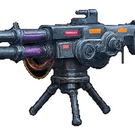
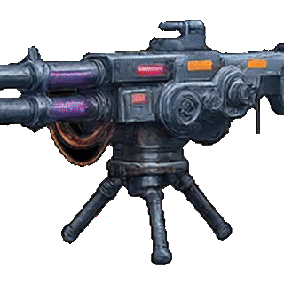
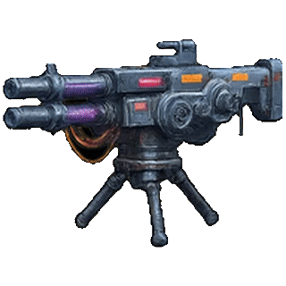
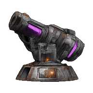
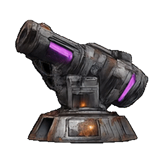
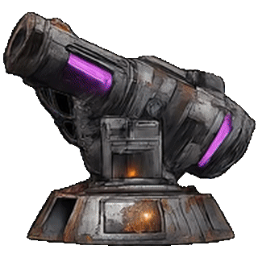
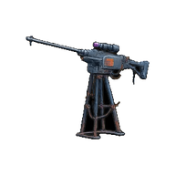
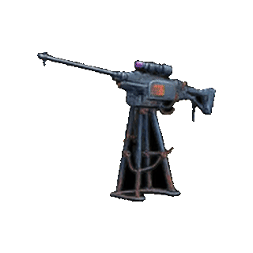
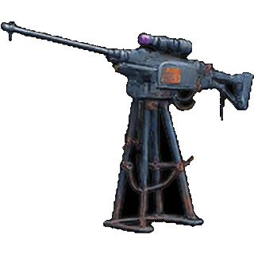
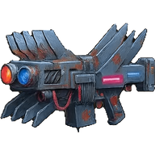
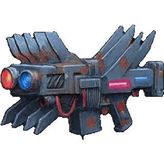
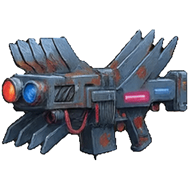
輔助前鋒——貼身擋在防線前面，不是遠程砲台。
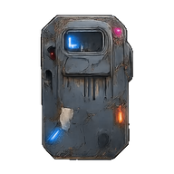
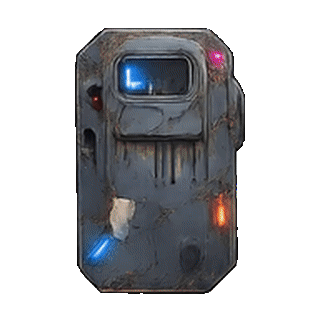
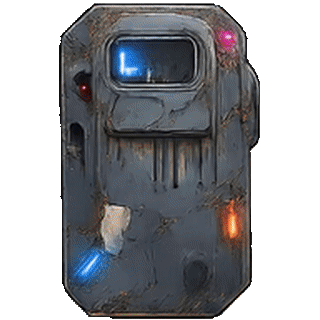
輔助前鋒——貼身擋在防線前面，不是遠程砲台。
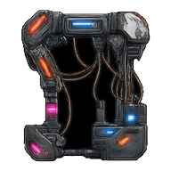
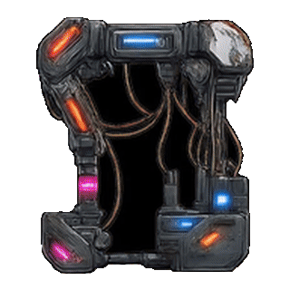
| # | 名稱 | 類別 | 圖示 | HP | 傷害 | 射程 | 開火間隔 |
|---|---|---|---|---|---|---|---|
| 1 | 機砲塔 | 砲台 | 🔫 | 90 | 10 | 260 | 0.18s |
| 2 | 迫擊砲塔 | 砲台 | 💣 | 110 | 55 | 320 | 1.4s |
| 3 | 狙擊塔 | 砲台 | 🔭 | 70 | 90 | 420 | 1.8s |
| 4 | 雷射塔 | 砲台 | 🔴 | 100 | 18 | 300 | 0.3s |
| 5 | 駐守衛兵 | 輔助前鋒 | 🛡️ | 220 | 14 | 60 | 0.6s |
| 6 | 突擊兵 | 輔助前鋒 | 🏃 | 130 | 45 | 140 | 1.1s |
沒有在遊戲場景裡的實拍截圖／錄影。這頁全部是素材本身（透明底），不是「戰鬥中畫面長怎樣」——同一個素材放進場景後，光影、縮放、跟殭屍的相對大小都會影響觀感。如果你挑中的項目要調，正式調整後我會照場景實拍再給你確認一次。
沒有涵蓋玩家小隊自己的槍手動畫。那是另一組素材（8 種武器各自的造型與開火動作），這頁只整理「駐守物」6 種——如果你也想連小隊槍手一起看過一輪，跟我說一聲另外整理。